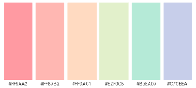

1. Chọn Bảng Màu Trước
Trước khi mua đồ nội thất, hãy quyết định bảng màu chủ đạo của phòng. Nên chọn tối đa 2-3 màu để phòng trông hài hòa. Ví dụ: trắng + hồng pastel + vàng nhạt sẽ tạo ra không gian ngọt ngào và dễ chịu.

2. Đặt Đồ Nội Thất Theo Vùng
Chia phòng thành các vùng chức năng: góc ngủ, góc làm việc, góc thư giãn. Đặt đồ nội thất theo từng vùng sẽ giúp phòng trông ngăn nắp hơn và tạo cảm giác rộng rãi dù diện tích nhỏ.
3. Ánh Sáng Là Chìa Khóa
Đừng bỏ qua đồ vật phát sáng! Đèn ngủ, đèn bàn, đèn dây... mỗi loại tạo ra không khí khác nhau. Buổi tối bật đèn vàng ấm sẽ làm căn phòng trông cực kỳ lãng mạn và dễ thương.
4. Cây Xanh Và Hoa
Thêm vài chậu cây hoặc bình hoa vào góc phòng. Ngoài việc làm đẹp, cây xanh còn tạo cảm giác sinh động và tươi mới cho không gian. Trong Pocket Love có rất nhiều loại cây trang trí đẹp để lựa chọn!
5. Đừng Để Phòng Quá Chật
Một sai lầm phổ biến là nhồi nhét quá nhiều đồ vào phòng. Hãy để một số khoảng trống — "less is more"! Phòng thoáng sẽ trông đẹp hơn phòng chật ních đồ đạc.
6. Tận Dụng Sự Kiện Theo Mùa
Pocket Love thường có đồ trang trí theo mùa và dịp lễ đặc biệt. Đừng bỏ lỡ các item giới hạn này! Chúng sẽ làm phòng bạn trông độc đáo và khác biệt hoàn toàn.